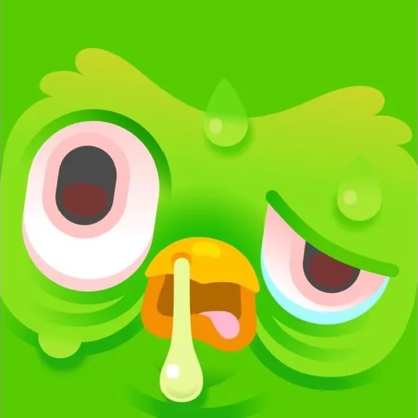

The Dreaded Soft Deadline
How to use deadlines to propel thesis writing. And what a deadline definitely is not.
At the 2025 MLA conference in New Orleans, a colleague shared that one of her students, a PhD candidate, begged her to “stop being nice” about deadlines and “create consequences” if the student continued to miss submission dates for dissertation chapters. As a mentor who has the dual task of holding advisees accountable, but also training them how to be responsible and autonomous researchers, my colleague was at a loss for how to respond to this request. It soon became clear that her dilemma was not an isolated case, as the rest of us at the hotel bar also have students who struggle with making steady progress once they arrive at candidacy (as well as a keen memory of our own experience as graduate students!). What we arrived at by the end of the night was that the problem, perhaps, lies in misconceptions about the “soft” deadline, the topic of this blog post.
The MA thesis / PhD dissertation stage can be one of the most daunting moments of graduate school. After carefully structured time and projects (coursework + term papers, comprehensive / MA exams, proposal + defence, etc.), students arrive to the thesis/dissertation and suddenly must compose a much longer piece of work with nebulous benchmarks and deadlines. Figuring out how to make regular progress and keep yourself on track for a timely graduation is one of the most important, and potentially difficult, tasks of graduate school. But if you do so, I can almost guarantee that it will make the writing process less stressful and more enjoyable, and it will set you up with lifelong time management skills that will serve you in many settings and roles. Your advisor will help create structure via meetings, check-ins, and draft deadlines, but, as you will soon learn, you’ll have a lot of agency and autonomy in structuring your time and deciding when you submit pieces for advisor review. This post is precisely about best practices for setting such ‘soft’ deadlines, which seem fungible, but are (or maybe should be) less flexible than you might think. Finally, it is a gentle caution about what NOT to do regarding deadlines, both for yourself and for others.
Hard versus Soft Deadlines
As academics, we’re all familiar with hard deadlines. You met a hard deadline when you applied to graduate school, submitted final papers during coursework, defended your thesis proposal, sent an abstract to present at a conference, applied for a travel grant, etc. These deadlines are typically bureaucratic and non-negotiable, and frequently, as in the case of grants and conference proposals, the recipient of your materials is unknown to you. People don’t typically miss hard deadlines, and if you do, there are immediate and material consequences (no grant money, no conference presentation on your CV, late penalty on a paper, etc.).
Soft deadlines are usually more individualized and self-determined, and they can seem more like a guideline than a requirement. Whereas all applicants must submit materials by a fixed date for a fellowship competition (hard deadline), a first draft of a thesis chapter has a soft deadline because students select and manage those deadlines themselves / in consultation with their advisors. Given this autonomy and the fact that nothing seems to be riding on successfully making a soft deadline, people—and academics in particular—sometimes and even often miss soft deadlines.
But I want to argue that soft deadlines aren’t soft at all and should be treated much more like hard deadlines. This is because disregarding them has an effect on you—both in the short- and the long-term—as well as on others, and there can be major consequences for missing them too often.
Consequences of Missing a Soft Deadline
Missing deadlines can become a habit. Think about the last time you made a New Year’s resolution… Maybe you determined to read 10 pages of Proust each day for the whole year, run 2 miles a day every evening, or faithfully complete a daily Italian lesson on Duolingo before breakfast. If you’re a more resolute human than me, perhaps you kept your resolution and you’re now a fit, parlante italianə who knows how In Search of Lost Time ends. But if you’re like me, you probably kept at it for three or four weeks before one missed Duolingo session turned into a whole week off in March and by April that Duolingo owl looked like he was melting on your forgotten phone app. The same thing can happen with soft deadlines. The more often you let a soft deadline slide, the more likely you are to miss future goals.

This can have serious consequences if it becomes a habit.
First, you’re sort of training yourself to take self-imposed deadlines less seriously, which affects time to degree, but can also seep outside of thesis writing to affect other areas of your life.
Second, you are demonstrating to your advisor that you have less-than-stellar time management skills. As you progress through the MA or PhD, you should be improving on a variety factors, such as clarity of writing, presentation skills, teaching abilities, grant writing competency, and, crucially, time management. Your advisor and committee members are expected to comment on each of these abilities in their letters of recommendation and zero mention of successful time management skills can read like a glaring omission. Determining ambitious but feasible soft deadlines, communicating those deadlines to your advisor, and then reliably meeting them is part of your professionalization in graduate school. In turn, these skills will set you up for solid letters of recommendation that emphasize how you will be a responsible and dependable colleague and mentor in your future career.
Related to point two: In academia, your advisor is an important resource and, for those who want to be academics, a future colleague. If you have similar research interests, they might invite you to present on panels, contribute a chapter to an edited volume, collaborate on a special issue, etc. Likewise, advisors are a great networking resource, and they are often glad to set up potential collaborations with fellow colleagues. However, these opportunities are generally only offered to former students who have demonstrated reliability—those who consistently meet deadlines, respect others’ time, and maintain clear communication about availability, scheduling, and work capacity. This makes good sense given that advisors are putting their names on the line when they recommend students for opportunities.
Third, missing soft deadlines is cruel to “future you.” Pushing back short-term soft deadlines means that, in all likelihood, you will have to either sacrifice quality for speed or extend the long-term objective that those soft deadlines are building toward. In regard to the dissertation, if you plan to graduate by May of your sixth year, and you set a 2.5-year writing timeline to arrive at that goal—allowing, for instance, four months per chapter, with time for advisor and committee feedback followed by revisions—then delaying an early chapter by one, two, or six months eats into the time you have allotted to work on future chapters. This has major consequences for “future you,” who will now have to cut corners and rush or delay graduation. Be kind to future you :)
Fourth, missing soft deadlines affects others and, crucially, it affects how others view you. When my advisees tell me to expect a chapter draft, I block out time in my calendar to read that draft. If the student tells me that they’ll send a draft in two months, I take that into account when I’m managing my own time, which might mean, for instance, that I turn down an article review request or avoid scheduling meetings on a particular day. If that student then pushes the deadline back or, worse, simply fails to inform me that they won’t be submitting the draft as arranged, that has real effects on my life. If this happens once or twice, I’m not excessively bothered, but if it becomes a habit, I find myself less willing to plan ahead in anticipation of receiving their work, because I have learned not to expect it when promised.
Don’t Fret
Here, I want to emphasize that missing a deadline or three or pushing back a couple of draft submissions is not a huge faux pas. Life happens! Your advisor understands that (1) you are human and may need to adjust your schedule, (2) you are juggling lots of responsibilities (TAships, family, conference presentations, etc. etc.) that will periodically affect you, and (3) deadlines are often ambitious on purpose, which means that we must occasionally extend them. What this post seeks to communicate is that setting achievable soft deadlines is a skill and it may take practice. It is part of time management, which involves understanding how to set achievable goals, anticipating how long you’ll need for different tasks, and developing strategies that work for you to meet deadlines. For both myself and my students, I suggest ambitious but humane soft deadlines. Below is the process that I use for determining soft deadlines.
Making and Meeting Realistic Deadlines
NB: I revisit the first two bullets multiple times in order to determine time-to-completion.
- Calculate how long the task will take you.
- This may require breaking it down into manageable chunks. For instance, I’m writing this post in January 2025 and I want to have a book proposal and sample chapter finished by August 2025, and I have divided those two items into various smaller goals. For the proposal, for instance, I have soft deadlines for the short description / project abstract, the detailed description, chapter outline and descriptions, etc., because it’s easier for me to make an informed guess about effort / time required for the smaller bits.
- Review your upcoming calendar. Take into account both regular events and tasks (e.g., teaching, research meetings, departmental talk series, etc.) and occasional or one-off items (trip home, vacation, professionalization workshop, etc.).
- Based on the two preceding steps, ask yourself: By what date can I reasonably complete this new to-do list item?
- Put soft deadlines into calendar! If I don’t do this step, then I may forget to take these goals / deadlines into account when scheduling future deadlines.
- Know yourself: There are some soft deadlines that I know I will meet without difficulty or delay; however, there are others that require a bit of motivation. In those cases, I take steps to ensure that I will meet a given deadline. For instance, when I have essays to mark, I know that I will pretty much always get them back to my students within two weeks; however, if I want to return the papers a bit early (to free up future time for a different task, to give my students more time to consider feedback before a final paper, etc.), I inform my students that I plan to have them back within a week. Making myself accountable to other people is a great personal motivator to get things done on time. Figure out what tricks work for you and use those wisely to meet your soft deadlines. With that, the closing section includes strategies that work for me!
Accountability Strategies
If you miss a deadline, be gentle with yourself, but also consider how you can avoid making it a habit. Below are a few strategies that I use to hold myself accountable and meet my soft deadlines:
- Keeping a calendar: My calendar is crucial for my own time management, and I often look at my big picture calendar (upcoming abstract submissions or appointments, meetings or committee work that will take chunks of time, draft deadlines, etc.) when setting soft deadlines for myself and communicating those deadlines with others (students, writing group members, journal editors, etc.).
- Set achievable soft deadlines: Break ‘big’ tasks, such as a finished draft of a thesis chapter, into a series of smaller tasks (e.g., literature review, introductory section, methodology, literary analysis 1, literary analysis 2, conclusion, bibliography) that are more manageable and tangible.
- Use hard deadlines to meet soft deadlines: For instance, if I know I need a chapter or article finished by a particular date, I present on the project at a conference to motivate my writing. Creating an abstract six months in advance and writing a 20-minute presentation two months before the full-draft deadline kickstarts the essay, and then I use that progress as a springboard to complete the draft. This aligns with the advice to be strategic about your writing from an earlier post.
- Communicating soft deadlines with others: This may seem silly (or crazy), but I tell my hair stylist about my research every three months when I get my hair cut. Knowing that she’ll ask me about the project motivates me to get things done so that I can report progress. This was legitimately one of the most important factors to submitting my first book, and my stylist will be getting a shoutout in the acknowledgments when that book comes out. If using your hair stylist as an accountability partner isn’t your thing, tell your partner or a friend or family member. And of course letting your advisor know to anticipate a draft is a great way to make a soft deadline more firm.
- Writing Groups: I’m part of two writing groups at present, and preparing drafts for their feedback not only improves my writing, but it gets me to write coherent essays even when there isn’t a hard deadline.
Here is a great piece on how to set and meet soft deadlines from Inside Higher Ed: Managing Deadlines in Grad School, by Kaitlin Gallagher
Ultimately, setting and maintaining deadlines is about time management and demonstrating accountability, both to yourself and to others who are affected by your deadlines. By the final stages of your education—which are the early stages of your career!—you should be developing personal strategies that work for you to meet soft deadlines. This will show your supervisor, committee members, and colleagues that you are self-sufficient and have the capacity to structure and generate your own work. Whether you want to stay in academia, go to alt-ac, or get a job in the public or private sector, those are deeply important skills.